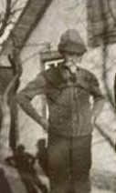
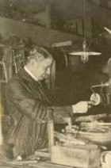
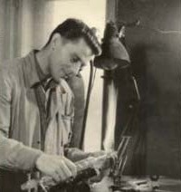
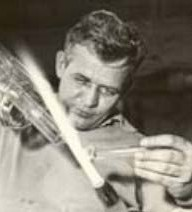
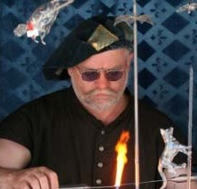
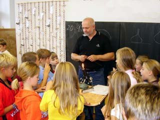
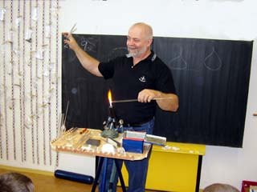
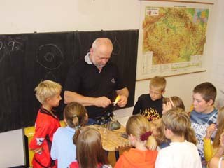
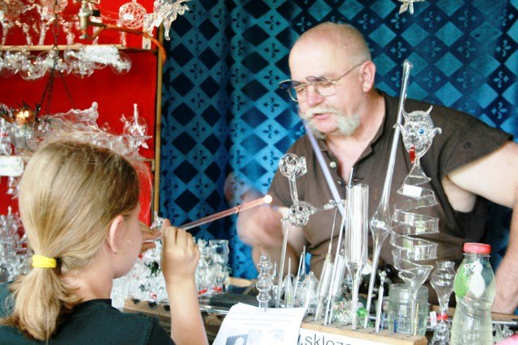
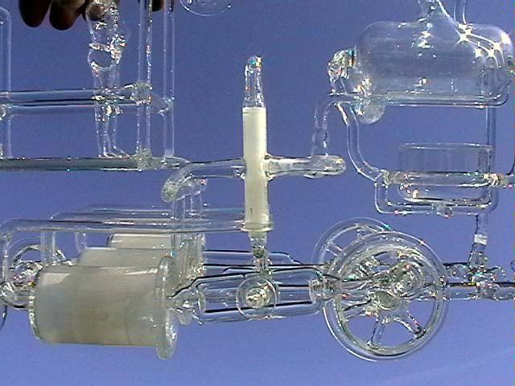

Michal Zahradník · sklář v osmé generaci
Parní stroje, motory i letadlo. Ze skla.
Pohyblivé modely ze skla stavím od roku 1991. Sklářské řemeslo se v naší rodině dědí od roku 1775 a s kahanem jezdím i do škol.

- 1775
- první sklář v rodu
- 8.
- generace sklářů
- 10
- pohyblivých modelů
- 188
- navštívených škol a školek
- 3
- české rekordy
Rodokmen
Osm generací,
jedno řemeslo.
Dobrý den, navštívili jste stránky jednoho z nejstarších sklářských rodů v Čechách, kde se již od roku 1775, po osm generací, předává toto řemeslo z otce na syna.
Nevím, jestli se i předcházející generace živily jako skláři, čas odvál jejich osudy na cestu zapomnění a nám nezbývá než věřit, že své geny trpělivosti a lásky k řemeslu vložili do generací dalších.





Skleněné modely
Všechno se hýbe. Všechno je sklo.
Šrouby ani nýty ve skle nepoužijete. Na některých modelech mi vymýšlení a výroba přípravků zabrala až pětkrát víc času než samotná výroba.
 01První, jednoválcový parní strojJednočinný parní stroj — můj první skleněný model.
01První, jednoválcový parní strojJednočinný parní stroj — můj první skleněný model. 02Druhý, jednoválcový parní strojVětší setrvačník, diamantem vybroušený válec. Běží i na páru.
02Druhý, jednoválcový parní strojVětší setrvačník, diamantem vybroušený válec. Běží i na páru. 03Tříválcová lokomotivaTři válce po 120° a zcela originální pohon šoupat.
03Tříválcová lokomotivaTři válce po 120° a zcela originální pohon šoupat. 04Stephensonova lokomotivaLokomotiva z roku 1829 pro rozchod 127 mm. Český rekord.
04Stephensonova lokomotivaLokomotiva z roku 1829 pro rozchod 127 mm. Český rekord. 05AutoNejdřív na elektromotor, pak na páru. Diferenciál ze skla.
05AutoNejdřív na elektromotor, pak na páru. Diferenciál ze skla. 06BoxerMotor pro parní auto, který běží jako zdivočelé Kango.07HvězdiceHvězdicový motor — osobně ho považuji za své vrcholné dílo.
06BoxerMotor pro parní auto, který běží jako zdivočelé Kango.07HvězdiceHvězdicový motor — osobně ho považuji za své vrcholné dílo. 08Čtyřválcový řadový motorKlikovka osmkrát zalomená. Vznikl v únoru 2015.
08Čtyřválcový řadový motorKlikovka osmkrát zalomená. Vznikl v únoru 2015. 09LetadloRozpětí 1 m, let 7. června 2000 v Rakovníku. Český rekord.
09LetadloRozpětí 1 m, let 7. června 2000 v Rakovníku. Český rekord. 10VšehochuťSkleněná pružina a pijící čáp, kterému říkám „Kejvák“.
10VšehochuťSkleněná pružina a pijící čáp, kterému říkám „Kejvák“.Video
Tři minuty u kahanu
Výroba parního stroje ze skla v sestříhané a zrychlené verzi — od trubice až po první otáčku setrvačníku.
Výroba parního stroje ze skla — zrychlená verze otevřít na YouTube



Pro školy a školky
Sklo kolem nás
Dvouhodinová přednáška o skle s ukázkami tvarování nad kahanem. Na konci si každé dítě vyfoukne vlastní skleněnou kuličku a odnese si ji domů.
- 2 × 45 minut pro jednu třídu, za den až čtyři třídy
- Od tří let — i předškoláci si kuličku nafouknou
- Mobilní pracoviště 2 × 2 m, připraveno za 20 minut
- 5 000 Kč do 40 dětí, každé další 100 Kč, cestovné 8 Kč/km
„U mladších pak bývá hlavním problémem utěsnění rtů okolo trubičky, takže funí sice pěkně, ale všude okolo…“

Řemeslné trhyPojízdná sklárna jako přívěs za auto. Předvádím foukání skla a lidé si mohou vyfouknout vlastní kuličku.
Technické skloVýroba a oprava laboratorního a technického skla v rámci možností mé dílny.Ostatní výrobkyDrobnosti ze skla na Fléru a výroba na přání — spojím vaše představy a moje možnosti.


Rekordy a ocenění
Zapsáno i v knize rekordů
- 2000Let skleněného letadla — český rekord
- 2002Funkční skleněný model parní lokomotivy — český rekord
- —Skleněná pružina — český rekord
- 2005Rekordman roku
Občas jsem byl hostem v televizi
- Toulavá kamera ČT, čas od 17:17
- Barvy života ČT, 16. 4. 2010
- Machr stories: Parní stroje ze skla Hornbach